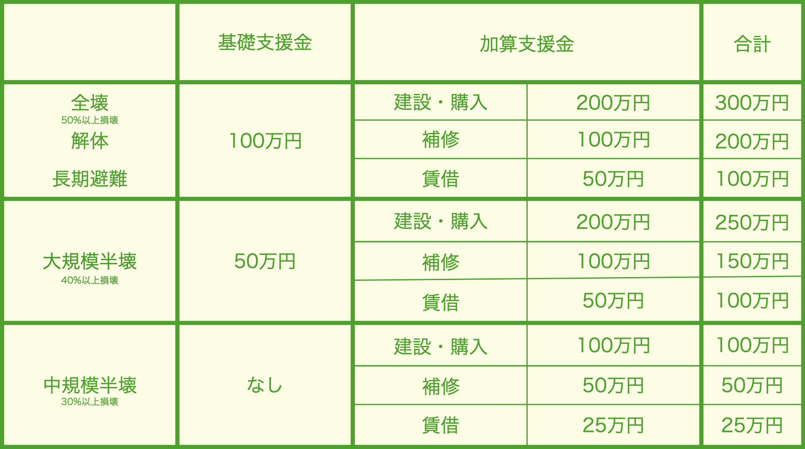

さまざまな支援
1つ前の「支援を受けるには」ページで支援を受ける準備ができたので、
次は災害時に役立つ支援制度について学びましょう。
このページでは、様々な支援制度をジャンルに分けて見やすく解説しています。
支援を知ろう！
国や自治体は自然災害の影響に対するさまざまな支援制度を用意しています。 しかし支援を受ける際は原則自ら申請しないといけないので、支援の種類や申請方法を知っておくことが大切です。 自分がどんな支援を受ける可能性があるか、このページで確認しましょう！
さまざまな支援制度
お金の支援制度
・被災者生活再建支援法

概要：災害により住宅が壊れた際、壊れた程度によって支援金をもらうことができる。被害を受けるともらえる「基礎支援金」と住宅の再建で追加でもらえる「加算支援金」がある。
条件：住宅が「全壊建物の損害割合が50%以上の状態の建物」「解体住宅に半壊などの被害が生じ、やむを得ず解体した状態」「長期避難住宅に危険な状態が継続し、居住できない状態が長時間続いている状態」「大規模半壊建物の損害割合が40%以上50%未満の状態の建物」「中規模半壊建物の損害割合が30%以上40%未満の状態の建物」の状態の世帯。※世帯人数が1人も場合はもらえる金額が3/4になる。
問い合わせ：都道府県、市町村
・災害弔慰金
概要：災害によって死亡された人の遺族に支給されるお金。
・生計維持者が死亡した場合は市町村が定めた額(500万円以下)
・その他の人が死亡した場合は市町村が定めた額(250万円以下)が支給される。
条件：災害により死亡した人の遺族
問い合わせ：市町村
・災害障害見舞金
概要：災害による負傷、病気で身体または精神に障害が出た場合に支給されるお金。
・生計維持者が障害を受けた場合は市町村が定めた額(250万円以下)
・その他の人が障害を受けた場合は市町村が定めた額(125万円以下)が支給される。
条件：次のような重い障害を受けた人
・両目が失明した人
・咀嚼及び言語の機能をなくした人
・神経系統の機能または精神に著しい障害を残し、常に介護を要する人
・胸腹部臓器の機能に著しい障害を残し、常に介護を要する人
・両上肢及び両下肢をひじ関節以上で失った人
・身体または精神の障害が重複する場合、重複する障害が前項目と同程度以上だと認められる人。
問い合わせ：市町村
・義援金
概要：寄付された「被災者に配られる」お金。
※支援金は人命救助や復旧などのさまざまな活動に利用される。
条件：全ての被災者に公平・平等に配布されるため無し
問い合わせ：各自治体
・生活保護
概要：生活に困窮している人に生活の保障と助長を目的とした、困窮の程度に応じてもらえるお金。
条件：資産や能力などを全て活用した上でも生活に困窮している人。
問い合わせ：都道府県、市町村
住宅の支援制度
・住宅の応急修理
概要：災害によって住宅が壊れた際、生活に必要な部分を応急的に修理してくれる制度。
・半壊建物の損害割合が20%以上30%未満の状態の建物以上の場合は59万5000円以内
・準半壊建物の損害割合が10%以上20%未満の状態の建物の場合30万円以内の修理をしてもらえる。
条件：罹災証明書に「全壊建物の損害割合が50%以上の状態の建物」「大規模半壊建物の損害割合が40%以上50%未満の状態の建物」「中規模半壊建物の損害割合が30%以上40%未満の状態の建物」「半壊建物の損害割合が20%以上30%未満の状態の建物」「準半壊建物の損害割合が10%以上20%未満の状態の建物」のいずれかが記載されている人。
問い合わせ：都道府県、市町村
注意点！：この制度を利用すると仮設住宅に入れなくなってしまう。そのため、被害が大きく家全体の修理費用が払えない場合は支援を受けずに、仮設住宅へ入ることを検討するべし。
・公費解体
概要：安全の理由と二次災害の防止のため、市町村が所有者に代わって建物を解体・撤去してくれる制度。
条件：罹災証明書に「全壊建物の損害割合が50%以上の状態の建物」「大規模半壊建物の損害割合が40%以上50%未満の状態の建物」「中規模半壊建物の損害割合が30%以上40%未満の状態の建物」「半壊建物の損害割合が20%以上30%未満の状態の建物」のいずれかが記載されている人。
問い合わせ：市町村
・生活福祉資金制度の住宅補修貸付
概要：災害によって被害を受けた住宅の補修、保全、増築、改築等に必要なお金を貸してくれる制度。
250万円を目安に：
・連帯保証人を立てると無利子
・連帯保証人を立てないと年1.5%の利子がつく。
条件：低所得世帯、障害者世帯または高齢者世帯
問い合わせ：都道府県社会福祉協議会、市町村社会福祉協議会
・災害復興住宅融資
概要：罹災証明書を持っている人が住宅を建設、購入、修理するときに使える融資制度。
条件：建設、購入は「全壊建物の損害割合が50%以上の状態の建物」「大規模半壊建物の損害割合が40%以上50%未満の状態の建物」「中規模半壊建物の損害割合が30%以上40%未満の状態の建物」「半壊建物の損害割合が20%以上30%未満の状態の建物」が対象。補修は罹災証明書だけで良い。
問い合わせ：住宅金融支援機関など
・母子父子寡婦福祉資金貸付金
概要：母子家庭、父子家庭、寡婦に経済的な自立と生活の安定を目的として借りられるお金。災害によるものには返すお金の執行猶予などの特別措置が講じられる。
条件：母子家庭の母、父子家庭の父、父母のいない児童、寡婦
問い合わせ：自治体の福祉事務所
仮設住宅・公営住宅
・災害救助法の応急仮設住宅
概要：住宅の全壊などにより居住する家がなく、自らの資力では住宅を得ることができない人が入ることができる仮の住居。
条件：住宅の全壊などにより居住する家がなく、自らの資力では住宅を得ることができない人。
問い合わせ：市町村
・公営住宅への入居
概要：低所得者向けに安い賃料設定で提供される賃貸住宅。必要がある場合は一定期間、家賃が減免されることがある。
条件：災害によって住宅を失い困窮している人。各自治体の所得条件を満たしている人。
問い合わせ：各自治体
ローンの減免制度
・被災ローン減免制度
概要：災害によって借金が返せなくなった人のためにローンを免除・減額してくれる制度。支援金500万円を手元に残した上で、ローンの減免を受けることができる。
この制度を利用しても信用情報登録機関に登録がされず、信用情報に傷がつかない(ブラックリストに載らない)ので新しいローンを組むこともできる。また、連帯保証人への催促もいかない。
条件：災害の被害によってローンが返せなくなり、なおかつ世帯の年収が730万円未満の人。
問い合わせ：メインバンク、弁護士会
子供がいる人への支援制度
・教科書等の無償給与
概要：災害により学用品を失った児童・生徒に強化書、教材、文房具、通学用品を支給してもらえる制度。
条件：住宅に被害を受け、学用品を失った小・中学校、高等学校などの児童・生徒
問い合わせ：都道府県、市町村
・小中学制の就学援助措置特別支援学校等への就学奨励事業
概要：災害による経済的な理由で就学が難しい児童・生徒の保護者に学用品費、新入学用費、通学費、校外活動費、給食費等を援助してもらえる措置。
条件：災害による経済的な理由で就学が難しい児童・生徒の保護者。非難をされている人。
問い合わせ：都道府県、市町村、学校
・特別支援学校等への就学奨励事業
概要：災害による経済的な理由で就学が難しい幼児、児童、生徒の保護者に学用品費、新入学用費、通学費、校外活動費、給食費等を援助してもらえる措置。
条件：被災により新たに特別支援教育就学奨励費事業の対象となった世帯または市弁区分が変更になった世帯。
問い合わせ：都道府県、市町村、学校
・高等学校授業料等免除措置
概要：災害による経済的な理由で授業料が払えない生徒を対象に、授業料などを減額・免除してもらえる措置。
条件：自治体の長が減免を必要だと認めた人
問い合わせ：都道府県、市町村、学校
・大学授業料等減免措置
概要：災害による経済的な理由で授業料が払えない学生を対象に、各学校(大学、短期大学、大学院、高等専門学校)での授業料などを減額。免除してもらえる措置。
※基準や減免額などは学校ごとに異なる。
条件：各大学などで、減免などを必要とすると認められた人
問い合わせ：学校(授業料担当窓口)
・教育ローン
概要：入学資金・在学資金のお金を借りられる制度。1人当たり350万円まで。
条件：学生の保護者。世帯の年収に関する上限額の設定あり(所得制限)
問い合わせ：日本政策金融公庫など
税金や保険料などの減免制度
・地方税の特別措置
概要：災害の被害を受けた場合、地方税の減免・猶予・延長ができる制度。
条件：災害によって財産などに被害を受けているかつ、一定の要件を満たす人
問い合わせ：都道府県、市町村
・国税の特別措置
概要：申告期限の延長、納税猶予、予定納税減額、源泉所得税などの執行猶予、所得税の軽減などができる制度。
条件：災害によって財産などに被害を受け、税金が払えなくなってしまった人
問い合わせ：税務署
・医療保険・介護保険の保険料・窓口負担の減免措置
概要：災害によって保険料・窓口負担の支払いが困難になった場合、減額・免除がされる制度。
※保険者によって取扱が異なる。
条件：災害による収入の減少などの特別な理由で、保険料・窓口負担の支払いが困難だと認められる人
問い合わせ：保健組合、市町村など
・公共料金・使用料・保育料・放送受信料などの特別措置
概要：災害による被害を受けた人に料金の軽減・免除などがされることがある。
条件：災害による被害を受けた人(都道府県・市町村・関係事業者が定める)。
放送受信料は建物が半壊以上の被害を受けた人が対象。
問い合わせ：都道府県、市町村、関係事業者